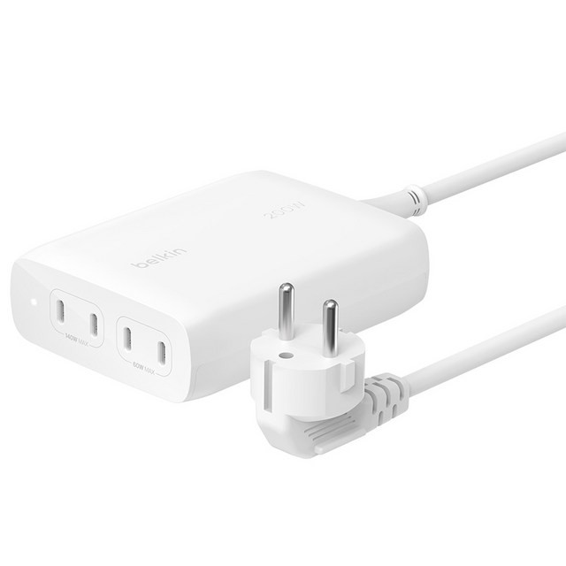
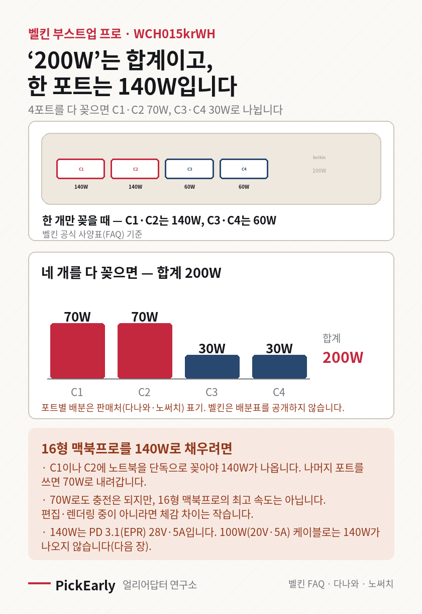
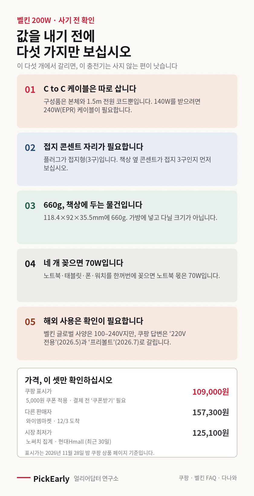

109,000원 벨킨 200W 4포트 GaN 충전기 — ‘200W’를 한 포트에서 받으려면 케이블부터 240W여야 합니다
벨킨 부스트업 프로 200W(WCH015krWH)는 쿠팡 109,000원(42%, 5,000원 쿠폰 적용)에 상품평 216건입니다. 200W는 4포트 합계이고 한 포트 최대는 140W이며, 네 개를 다 꽂으면 C1·C2 70W, C3·C4 30W로 나뉩니다. 140W를 받으려면 240W EPR 케이블이 따로 필요하고 660g이라 책상에 두는 물건입니다. 사기 전에 확인할 다섯 가지와 같은 200W급 대안 가격까지 정리했습니다.
목차 · 10개 장
이 포스팅은 쿠팡 파트너스 활동의 일환으로, 일정액의 수수료를 제공받을 수 있습니다. 구매 가격은 동일합니다.
가격·평점·후기 수·배송은 2026년 11월 28일 밤 쿠팡 상품 페이지에서 직접 확인한 값입니다. 스펙은 벨킨 공식 FAQ·데이터시트와 다나와·노써치 표기를 함께 대조했고, 표기가 갈리면 그 자리에서 밝혔습니다. 가격은 쿠폰과 판매자에 따라 움직이니 결제 화면의 최종 금액으로 확인하십시오.
“200W 4포트”라고 적힌 충전기를 사 놓고, 16형 맥북프로를 꽂았더니 예전 96W 충전기와 다를 게 없다고 느끼는 일이 생깁니다. 이유는 대개 충전기가 아니라 케이블에 있습니다. 충전기는 기기와 “몇 볼트에 몇 암페어를 보낼까”를 협상할 뿐이고, 그 전류를 실제로 통과시키는 것은 케이블입니다. 100W짜리 케이블을 끼우면 140W도 200W도 나오지 않습니다.
벨킨 부스트업 프로 200W(WCH015krWH) 는 그 협상의 상한을 높여 둔 충전기입니다. USB-C 네 개, 합계 200W, 한 포트 최대 140W. 맥북프로 16형을 30분에 0→50%까지 채우는 속도를 내걸고, 2년 보증과 최대 $2,500 연결기기 보상(CEW)을 붙였습니다. 쿠팡에서 정가 188,900원의 42% 할인, 109,000원입니다.
그래서 이 글은 스펙 자랑 대신 돈을 내기 전에 계산해야 할 것부터 정리했습니다. 200W가 어디로 어떻게 나뉘는지, 140W를 받으려면 무엇이 더 필요한지, 660g이 어디에 걸리는지, 같은 200W급이 7만 원대에도 있는데 왜 이 제품이 10만 원인지입니다.

1. 109,000원, 지금 사는 조건
1-1. 표시가와 배송
| 항목 | 내용 |
|---|---|
| 정가 / 할인 | 188,900원 → 109,000원 (42%) |
| 쿠폰 | 쿠폰할인 5,000원 적용됨 (결제 전 ‘쿠폰받기’ 필요) |
| 평점 | 상품평 216건 · 최고 89% · 좋음 8% · 보통 2% · 별로 0% · 나쁨 1% |
| 판매자 | 쿠팡(주) (판매자 평가 98%) · 로켓배송 |
| 배송 | 무료배송·무료반품 · 11/30(월) 도착 |
| 적립 | 2,400원 캐시적립 (최대 3,490원) |
| 색상·구성 | 화이트 · 본체 + 1.5m 분리형 전원 코드 |
| 교환·반품 | 로켓배송 단순변심 30일 (와우회원 무료 / 일반 반품비 5,000원) |
표시가 109,000원은 5,000원 쿠폰이 반영된 값입니다. 상품 페이지에 “쿠폰 적용됨”이라고 적혀 있어도, 결제 단계에서 쿠폰을 한 번 받아야 하는 경우가 많습니다. 결제 화면에서 114,000원이 잡히면 쿠폰이 빠진 것이니 쿠폰받기 버튼을 먼저 누르십시오.
1-2. 이름보다 모델명을 보십시오 — 부스트업인가 부스트차지인가
쿠팡 상품명은 벨킨 부스트업 프로 ... WCH015krWH인데, 벨킨 공식몰과 가격비교 사이트는 같은 제품을 부스트차지 프로(BoostCharge Pro) 로 부릅니다. 국내 유통사가 붙인 이름이 갈려서 생긴 차이입니다. 검색으로 헷갈리지 않으려면 이름 대신 모델명 WCH015krWH(또는 WCH015)를 확인하십시오. 쿠팡 ‘필수 표기 정보’의 품명도 WCH015로 끝납니다.
1-3. 같은 물건이 157,300원에도 올라와 있습니다
11월 28일 밤, 이 상품에는 다른 판매자가 2곳 더 있었습니다.
| 판매자 | 가격 | 배송 |
|---|---|---|
| 쿠팡(주) | 109,000원 | 11/30(월) 도착 |
| 와이엠마켓 | 157,300원 | 12/3(목) 도착 예정 |
같은 모델, 같은 구성인데 4만 8천 원 차이입니다. 이 글의 링크는 109,000원짜리 쿠팡 상품으로 연결됩니다. 다른 판매자 화면에서 결제하지 않도록 주의하십시오.
1-4. 이 가격이 싼 편인가
- 출시가 139,000원 (2024년 4월, 다나와 등록 기준)
- 노써치가 집계한 제휴몰 최근 30일 최저가 125,100원 (현대Hmall)
- 쿠팡 109,000원 — 위 둘보다 1만 6천~3만 원 낮습니다
같은 제품이 다른 몰에서 13만~16만 원대에 팔리는 것을 보면, 지금 쿠팡 값은 이 모델 기준으로는 낮은 축이 맞습니다. 다만 ‘200W 충전기 중에서 싼가’는 다른 질문이고, 그 답은 4장에서 다룹니다.
2. ‘200W’의 실체 — 한 포트는 140W, 네 개면 70·70·30·30

2-1. 스펙을 그대로 옮기면
| 항목 | 값 | 출처 |
|---|---|---|
| 모델명 | WCH015krWH (화이트) | 쿠팡 필수 표기 |
| 포트 | USB-C 4개 (A타입 없음) | 벨킨 FAQ |
| 합계 출력 | 200W (2개 이상 포트 사용 시) | 벨킨 데이터시트 |
| 한 포트 최대 | 140W | 벨킨 데이터시트 |
| C1·C2 출력 | 5V·9V·15V/3A, 20V·28V/5A → 140W | 벨킨 FAQ |
| C3·C4 출력 | 5V·9V·15V·20V/3A → 60W | 벨킨 FAQ |
| 충전 규격 | USB PD 3.1(EPR) · PPS 전 포트 | 벨킨 FAQ |
| 입력 | 100–240V, 50/60Hz | 벨킨 FAQ |
| 크기·무게 | 118.4 × 92 × 35.5mm · 660g | 벨킨 FAQ |
| 플러그 | 접지형(3구) · 분리형 코드 1.5m | 다나와·쿠팡 Q&A |
| 표시 | LED 동작 표시 | 벨킨 데이터시트 |
| 보증 | 2년 제한 보증 · CEW 최대 $2,500 | 벨킨 FAQ |
| 인증 | KC 전기용품 HU101203-24003 / 전파적합성 R-R-K7S-WCH015 | 쿠팡 표기 |
| 제조 | Dongguan Aohai Technology / 벨킨 유한회사 (중국·인도네시아) | 쿠팡 표기 |
| 출시 | 2024년 4월 | 쿠팡 표기 |
읽는 법은 세 가지입니다.
- 200W는 ‘네 포트의 합’입니다. 한 포트에서 200W가 나오는 제품이 아닙니다. 벨킨 데이터시트도 “2개 이상 포트를 쓸 때 합계 최대 200W, 단일 포트 최대 140W”라고 적습니다.
- C1·C2와 C3·C4가 다릅니다. 140W는 C1·C2에만 있습니다. 같은 충전기에 꽂아도 어느 포트에 꽂느냐로 최대치가 2배 이상 갈립니다.
- 포트별 배분표는 벨킨이 공개하지 않습니다. 아래 2-2의 숫자는 판매처(다나와·노써치) 표기입니다.
2-2. 네 개를 다 꽂으면
판매처 표기로는 네 포트를 동시에 쓰면 C1 70W · C2 70W · C3 30W · C4 30W, 합계 200W입니다. 계산이 딱 맞아떨어집니다(70+70+30+30=200).
여기서 실용적인 결론이 하나 나옵니다. 노트북과 폰·태블릿·워치를 한꺼번에 꽂으면, 노트북이 받는 전력은 140W가 아니라 70W입니다. 16형 맥북프로를 가장 빠르게 충전하려면 노트북을 C1(또는 C2)에 단독으로 꽂아야 합니다.
2-3. 3포트일 때는 어떻게 되나
이 질문의 답은 공개 자료에 없습니다. 벨킨은 4포트 배분표도, 3포트 배분표도 내놓지 않았고, 다나와 표기는 “3포트 사용 시 60W”로 읽히는 칸이 있어 4포트 때의 70W와도 어긋납니다. 정확한 3포트 배분은 벨킨 고객센터(1544-1011)에 물어보는 것이 유일한 방법입니다.
대신 확실한 사용법이 있습니다. 노트북은 C1·C2에, 나머지는 C3·C4에 꽂는 것입니다. C1·C2는 140W가 걸린 자리이고 네 포트를 다 써도 70W로 C3·C4(30W)보다 많은 몫을 받습니다. C3·C4는 애초에 60W 상한이라 폰·태블릿·워치를 두기에 맞습니다.
2-4. 실제로 어떻게 쓰게 되는가
| 상황 | 꽂는 법 | 노트북이 받는 전력 |
|---|---|---|
| 16형 맥북프로만 | C1 단독 | 140W (240W 케이블일 때) |
| 맥북 + 아이폰 | C1 + C2 | 140W + 60W 안팎 (합계 200W) |
| 맥북 + 아이패드 + 아이폰 | C1 + C2 + C3 | 140W + 30W + 30W 안팎 |
| 맥북 + 폰 + 태블릿 + 워치 | 네 포트 전부 | 70W |
1포트·4포트 값은 벨킨 사양표와 판매처 표기이고, 2·3포트는 포트별 상한(140W/60W)에서 계산한 예상치입니다. 벨킨이 2·3포트 배분표를 공개하지 않았으니, 정확한 값이 필요하면 고객센터에 확인하십시오.
70W로도 맥북은 충전됩니다. 다만 16형 맥북프로가 받을 수 있는 최고 속도는 아니어서, 영상 편집이나 렌더링을 돌리면서 쓰면 충전 속도보다 소모가 앞설 수 있습니다. ‘밤새 충전’이나 ‘사무 작업 중 충전’이라면 70W도 충분하고, ‘편집 중 빠른 충전’이 목적이면 포트를 비워야 합니다.
3. 140W의 절반은 케이블이 정합니다
3-1. 28V·5A, PD 3.1 EPR의 조건
140W는 USB PD 3.1의 EPR(Extended Power Range) 규격입니다. 전압을 28V까지 올려 5A를 보냅니다(28×5=140). 기존 PD 3.0은 20V까지여서, 20V×5A=100W가 한계였습니다.
그래서 140W에는 두 가지가 함께 필요합니다.
- 충전기가 PD 3.1 EPR을 지원할 것 — 이 제품은 지원합니다.
- 케이블이 EPR(28V)을 통과시킬 것 — 240W(또는 140W EPR) 등급 케이블이어야 합니다.
3-2. 100W 케이블이면 100W에서 멈춥니다
집에 있는 USB-C 케이블 대부분은 60W 또는 100W 등급입니다. 그 케이블로는 충전기가 140W를 낼 수 있어도 협상이 100W에서 끝납니다. 충전기 불량이 아니라 규격의 상한입니다. 맥북이 “충전 중”인데 예전보다 빠르지 않다면, 케이블부터 바꿔 보십시오.
3-3. 케이블 값까지 넣은 실제 비용
이 제품 구성품은 본체와 1.5m 전원 코드뿐입니다. C to C 케이블은 들어 있지 않습니다. 11월 28일 쿠팡 기준 240W 케이블 값은 이렇습니다.
| 케이블 | 가격 | 비고 |
|---|---|---|
| 벨킨 CAB025 240W 브레이디드 2m 2개 | 18,750원 | 개당 9,375원 · 후기 828건 |
| 벨킨 CAB015bt 240W 1m | 16,910원 | 후기 605건 |
| Apple 240W USB-C 2m | 23,640원 | 후기 2,403건 |
가장 싼 조합으로 109,000 + 18,750 = 127,750원입니다. 충전기만 보고 예산을 잡으면 2만 원 가까이 어긋납니다. 반대로, 이미 140W를 견디는 EPR 케이블이 있다면(맥북프로 16형의 140W 어댑터와 함께 오는 MagSafe 3 케이블 포함) 그대로 쓰면 됩니다.
4. 같은 200W, 다른 값 — 무엇에 돈을 내는가
11월 28일 쿠팡에서 확인한 200W급과 그 아래 가격대입니다.
| 제품 | 가격 | 포트 | 상품평 | 한 포트 최대 |
|---|---|---|---|---|
| 벨킨 부스트업 프로 200W WCH015 | 109,000원 | C 4 | 216 (최고 89%) | 140W |
| UGREEN 200W GaN 접지형 | 81,900원 | 8 | 473 (5.0) | 100W |
| 유엠투 200W GaN2 접지형 | 75,050원 | 5 | 270 (4.5) | 100W |
| 벨킨 부스트차지 프로 100W WCH016 | 64,900원 | C 3 | 129 (4.5) | 100W |
| Toocki GaN 140W (LED 표시) | 44,990원 | 5 | 3,901 (5.0) | 100W |
| 신지모루 오피디 100W | 38,900원 | 4 | 4,523 (5.0) | 100W |
표를 보면 답이 갈립니다.
- ‘200W를 가장 싸게’가 목적이면 유엠투(75,050원)나 UGREEN(81,900원)이 3만 원 이상 쌉니다. 포트 수도 더 많습니다(UGREEN 8포트).
- ‘한 포트 140W’가 필요한 경우는 다릅니다. 140W EPR을 내는 제품은 이 가격대에서 벨킨과 몇몇 상급기뿐입니다. 16형 맥북프로를 최고 속도로 채우려는 사람에게 100W 제품은 답이 아닙니다.
- 벨킨에 붙는 값은 140W 하나만이 아닙니다. 접지형 플러그(알루미늄 노트북을 만질 때 생기는 찌릿함을 콘센트 접지로 흘려보냅니다), 2년 보증, 최대 $2,500 연결기기 보상, 그리고 마감입니다. 이 표의 7만 원대 제품들과 이 세 가지가 같은지는 직접 확인하셔야 합니다.
한 가지 더. 가격비교 서비스 노써치는 이 제품의 종합 점수를 318개 유선충전기 중 132위(상위 42%, 63.7점) 로 매겼습니다. 가격 항목을 25% 반영한 순위라, ‘가성비 순위’는 높지 않습니다. 이 제품은 가성비로 고르는 물건이 아니라, 보증과 마감에 값을 더 주는 물건입니다.
5. 상품평 216건이 말하는 것
5-1. 별점 분포
216건의 평가는 최고 190건(89%) · 좋음 18건(8%) · 보통 6건(2%) · 별로 0건 · 나쁨 2건(1%) 입니다. 사진 후기가 132장 붙어 있고, “200명 이상 만족했어요” 표기가 있습니다. 4점 이상이 96%이니, 성능에 대한 불만은 거의 없다고 봐도 됩니다.
5-2. 좋은 점 (후기에서 반복되는 것)
- 포트 네 개가 전부 C타입이라 깔끔합니다. “요즘은 USB-A를 거의 사용하지 않아서 제 사용 환경에는 이 구성이 훨씬 좋아요. 맥북과 아이패드, 아이폰, 애플워치 등 여러 기기를 한꺼번에 충전하기 편리합니다.” (2026.11.23)
- 마감과 디자인 — “디자인과 마감도 역시 벨킨답습니다. … 마치 애플에서 만든 제품 같은 느낌입니다.” (2026.11.23)
- 140W 단일 포트 — 후기 제목부터 “단일포트 최대 140W 충전 가능. 미니멀한 디자인!”(2024.06.28, 도움 10명)
- 동시 충전 200W — “동시충전 200W까지 가능!”(2024.06.26, 도움 7명)
5-3. 아쉬운 점 (후기에서 직접 확인된 것)
- 크고 무겁습니다. 보통(3점) 6건 가운데 글을 남긴 4건 중 3건이 이것입니다. “생각보다 크고 무겁습니다. 가볍고 작은거 찾은분들에겐 비추입니다”(2025.09.19), “휴대용으로는 무거워요”(2026.05.30), “생각보다 크고 무겁네요.”(2024.07.04). 660g은 노트북 어댑터 두 개에 맞먹는 무게입니다.
- 케이블이 없습니다. “가격이 높은 제품인데도 별도의 충전 케이블이 포함되지 않았습니다.”(2026.11.23)
- 전원선 1.5m가 짧게 느껴질 수 있습니다. “분리형 전원선은 두껍고 튼튼해 보이지만 책상에서 사용하기에는 조금 아쉬운 길이예요. 개인적으로 2m였다면 더 좋았을 것 같습니다.”(2026.11.23)
- 초기 불량(기스) 사례가 1건 있습니다. “상품이 기스가 퍽퍽 나서 왔네요 … 교환처리- 이번엔 멀쩡한게 왔네요”(2024.10.12, 도움 3명). 교환 후 정상이었다는 점까지 함께 적혀 있습니다.
5-4. ‘나쁨’ 2건은 글이 없습니다
1점 2건(2026.02.07·2026.06.04)은 별점만 있고 내용이 비어 있습니다. 무슨 문제였는지 이 글에서는 알 수 없으니, 어떤 불만이었는지 짐작해서 옮기지 않겠습니다. 대신 초기 불량은 로켓배송 교환으로 처리된다는 점(5-3)과, 벨킨 AS 창구가 따로 있다는 점(7장)을 함께 보십시오.
6. 사기 전에 확인할 다섯 가지

6-1. 240W C to C 케이블을 함께 준비하십시오
140W를 쓸 생각이라면 필수입니다. 100W 케이블이면 100W에서 멈춥니다(3장). 케이블 값까지 12만 7천 원대로 계산하십시오.
6-2. 접지 3구 콘센트 자리가 필요합니다
이 제품 플러그는 접지형입니다. 한국 가정의 접지 3구 콘센트(둥근 구멍 2개 + 접지 구멍)에 꽂아야 하고, 접지가 없는 2구 콘센트에는 억지로 끼우지 마십시오. 접지가 이 제품의 장점 중 하나이니, 접지 못 하는 자리라면 값의 일부를 버리는 셈입니다.
6-3. 660g, 책상에 두는 물건입니다
118.4×92×35.5mm에 660g. “GaN이라 작다”는 말은 같은 출력의 예전 어댑터보다 작다는 뜻이지, 주머니에 넣는 크기가 아닙니다. 책상·서재·사무실에 고정해 두고 쓰는 용도로 보십시오. 들고 다닐 두 번째 충전기가 필요하다면 45~65W 소형기를 따로 두는 편이 낫습니다.
6-4. 네 개를 동시에 꽂으면 70W입니다
노트북·태블릿·폰·워치를 한꺼번에 꽂는 상황이 잦다면, 노트북이 70W만 받는다는 것을 전제로 사십시오(2-2). 노트북 급속 충전이 중요하면 C1을 비워 두는 습관이 필요합니다.
6-5. 해외 사용은 벨킨에 확인하십시오
- 벨킨 글로벌 사양표(FAQ)는 입력을 100–240V, 50/60Hz로 적습니다.
- 그런데 쿠팡 판매자 답변은 갈립니다. 2026년 5월 7일 답변은 “220V 전용 제품”, 2026년 7월 2일 답변은 “프리볼트 제품으로 다른 나라에서 사용 가능”입니다.
- 같은 판매자가 두 달 사이에 다르게 답한 것이므로, 해외 출장·여행에 들고 갈 계획이라면 벨킨 고객센터(1544-1011)에 모델명 WCH015krWH로 직접 확인하십시오. 플러그 모양이 달라 별도 어댑터가 필요한 것은 별개 문제입니다.
7. AS와 보증 — 벨킨 값의 절반
| 항목 | 내용 |
|---|---|
| 보증 기간 | 2년 제한 보증 (벨킨 FAQ) |
| 연결기기 보상 | 최대 $2,500 — 충전기 때문에 기기가 상했을 때 수리·교체 |
| 국내 AS | 벨킨 고객센터 1544-1011 · 온라인 접수 belkincs.com |
| 쿠팡 구매도 AS 되나 | 됩니다. 이 상품의 수입사가 벨킨 유한회사(국내 정품)이므로 벨킨 코리아에 모델명으로 접수합니다. 단, 해외 직구·병행수입은 불가합니다 |
| 배송비 | 구매 30일 이내 초기 불량 무상 / 30일~1년 편도 고객 / 1년 이후 왕복 고객 |
| 주의 | 해외 직구·병행수입 제품은 AS 불가 |
7만~8만 원대 200W 제품과 벨킨의 차이를 숫자로 만들면 이 표입니다. 2년 안에 고장이 나면 교체받을 창구가 있고, 그 충전기 때문에 노트북이 상하면 최대 $2,500까지 보상합니다. 물론 그런 일이 안 생기면 이 값은 보이지 않는 비용입니다. ‘한 번 사서 오래 쓴다’는 쪽에 값을 두는 사람에게 맞는 계산입니다.
8. 이런 분께 맞고, 이런 분께는 아닙니다
맞는 분
- 16형 맥북프로·고성능 노트북을 한 포트 140W로 채우고 싶은 분
- 책상 위에서 노트북·태블릿·폰·워치를 한 충전기로 정리하려는 분
- 어댑터를 여러 개 꽂아 두는 것이 싫어 접지형 멀티 충전기를 찾는 분
- 값이 조금 비싸도 2년 보증과 연결기기 보상이 있는 브랜드를 원하는 분
- 흰색 데스크테리어에 맞는 마감을 보는 분
맞지 않는 분
- 들고 다닐 충전기를 찾는 분 — 660g은 가방용이 아닙니다. 45~65W 소형기가 답입니다.
- 200W라는 숫자만 필요한 분 — 유엠투 75,050원, UGREEN 81,900원이 3만 원 이상 쌉니다.
- USB-A 포트가 필요한 분 — 이 제품은 C타입 4개뿐입니다. A타입 기기는 젠더가 필요합니다.
- 노트북을 4포트에 물려 놓고 140W를 기대하는 분 — 그 경우 70W입니다.
- 해외에서 주로 쓰려는 분 — 입력 전압 표기가 갈리므로 먼저 확인하십시오.
9. 구매 링크와 마무리
벨킨 부스트업 프로 200W 4포트 GaN 충전기 WCH015krWH — 109,000원, 쿠팡에서 보기 →제휴 링크 · 구매 가격은 동일합니다
140W를 쓸 생각이라면 240W 케이블을 함께 담으십시오.
- 벨킨 CAB025 240W 브레이디드 2m 2개 — 18,750원 (쿠팡에서 ‘벨킨 240W 케이블’로 검색)
- Apple 240W USB-C 2m — 23,640원
링크는 해당 상품 페이지로 연결되는 것을 직접 확인했습니다(단축 링크 302 → 상품 8042891803, 2026-11-28 21:18).
이 제품은 ‘200W 충전기’가 아니라 ‘한 포트 140W를 보증하는 4포트 충전기’ 입니다. 그 차이를 알고 사면 만족도가 높고, 모르고 사면 “200W라길래 샀는데 왜 느리지”가 됩니다. 후기 216건에서 성능 불만이 거의 없다는 것은, 적어도 그런 실망이 후기로 남을 만큼 흔하지는 않다는 뜻입니다.
마지막 당부는 셋입니다. 케이블이 240W인지, 콘센트가 접지 3구인지, 책상에 660g을 둘 자리가 있는지. 이 셋만 맞으면 나머지는 알아서 해 줍니다.
이 포스팅은 쿠팡 파트너스 활동의 일환으로, 일정액의 수수료를 제공받을 수 있습니다.
참고 자료 (2026년 11월 28일 확인)
- 가격 109,000원(정가 188,900원·42%·쿠폰 5,000원 적용)·상품평 216건·별점 분포(190/18/6/0/2)·사진 후기 132장·판매자 쿠팡(주)·배송 11/30·다른 판매자 와이엠마켓 157,300원·필수 표기 정보·KC 인증: 쿠팡 상품 페이지 8042891803 (itemId 22525550381, vendorItemId 89567571433), 2026-11-28 21:10~21:25 조회
- 상품문의: 220V 전용(2026.05.07) · 프리볼트(2026.07.02) · 1.5m AC 코드 포함(2026.06.07) · 벨킨 AS 1544-1011 안내(2026.08.21, AI 답변)
- 사양(입력 100–240V, C1/C2 28V·5A 140W, C3/C4 20V·3A 60W, PPS, 118.4×92×35.5mm, 660g, 1.5m 분리형 코드, USB-C 케이블 미포함, 2년 제한 보증, CEW $2,500, 동작 온도 0~25°C): 벨킨 공식 지원 FAQ (belkin.com/support-article?articleNum=336311) 및 제품 데이터시트
- “2개 이상 포트 사용 시 합계 200W, 단일 포트 140W”: 벨킨 WCH015 데이터시트(bechtle 미디어 배포본)
- 4포트 동시 사용 시 C1/C2 70W·C3/C4 30W: 다나와 제품 정보·노써치 스펙 분석(제조사 공식 배분표 아님)
- 출시가 139,000원·2024년 4월 등록·보증 24개월·접지형: 다나와 제품 정보(46104962)
- 노써치 종합 132위/318·63.7점·제휴몰 30일 최저가 125,100원(현대Hmall): 노써치 WCH015kr 페이지
- 국내 AS 절차·배송비 기준(30일 이내 무상 / 1년 이내 편도 / 이후 왕복, 병행수입 불가): 벨킨 코리아 고객지원(belkincs.com)
- 케이블 가격: 쿠팡 ‘다른 고객이 함께 구매한 상품’ — 벨킨 CAB025 240W 2m 2개 18,750원(후기 828), 벨킨 CAB015bt 240W 1m 16,910원(605), Apple 240W 2m 23,640원(2,403)
- 비교 제품 가격·후기 수: 쿠팡 같은 시각 검색 결과 — UGREEN 200W 8포트 81,900원(473), 유엠투 200W 5포트 75,050원(270), 벨킨 부스트차지 프로 100W 64,900원(129), Toocki 140W 44,990원(3,901), 신지모루 100W 38,900원(4,523)
- 후기 인용: 쿠팡 후기 2026.11.23·2026.05.30·2025.09.19·2024.10.12·2024.07.04·2024.06.28·2024.06.26 작성분
- 제휴 링크 연결 확인:
https://link.coupang.com/a/i2Bgmt2vlc→ 302 →coupang.com/vp/products/8042891803(2026-11-28 21:18, HTTP 302)
※ 본문의 가격·재고·도착 예정일은 2026년 11월 28일 확인 시점의 값입니다. 쿠폰과 판매자에 따라 달라지며, 결제 전 최종 금액을 확인하십시오.
이어서 읽기
 쿠팡 · AI 스마트 가전
쿠팡 · AI 스마트 가전